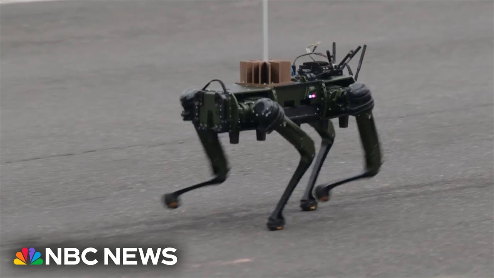

【无人机和机器狗在阅兵式中代表陆军的未来】
Summary: The video highlights the U.S. Army's modernization, showcasing advanced technologies like drones, robotic dogs ("mules"), and counter-drone systems, emphasizing their role in reducing soldier risk while honoring the 101st Airborne's historic legacy.
摘要： 视频展示了美国陆军的现代化进程，包括无人机、机器狗（“骡子”）和反无人机系统等先进技术，强调它们在降低士兵风险中的作用，同时致敬第101空降师的历史传统。

⏱️ Estimated Reading Time: 6 min
📚 六级生词 📚 雅思生词 📚 托福生词 📚 专八生词 📚 SAT生词 📚 考研生词 📚 GRE生词 📚 高考生词
We should note that we are also showing an image of a drone flying overhead.
我们应该注意到，我们还展示了一架无人机在头顶飞过的画面。
Uh as we come to you, Colonel, uh tell us about uh the next iteration of the United States Army.
上校，请您向我们介绍一下美国陆军的下一代发展。
Obviously, the 101st Airborne has been around for a long time, involved in conflicts dating all the way back uh to the beginning of the last century.
显然，第101空降师历史悠久，参与的冲突可追溯到上世纪初期。
Talk to us about the future.
请谈谈未来。
Yes, sir.
是的，长官。
Absolutely.
当然。
So just like you said that the 101st Airborne has a long uh rich history of defending America around the world.
正如您所说，第101空降师有着悠久而丰富的历史，在全球保卫美国。
Uh one of our our teams today that you just saw was what we are calling the the army of 2030.
您刚才看到的我们的一支队伍，正是我们所说的“2030年陆军”。
So at the 101st Airborne we have the most modern equipment, some of the most modern weapons, uh communication equipment, the drones you rev mentioned.
在第101空降师，我们拥有最现代化的装备，包括一些最先进的武器、通信设备和您提到的无人机。
Uh we also have counter drone technology um electronic warfare technology.
我们还拥有反无人机技术和电子战技术。
So even though our history goes goes far back, we also are reaching far into the future.
因此，尽管我们的历史深远，但我们也在向未来迈进。
So it's we're really proud to be here, represent the 101st and the army and really show the world, you know, what our soldiers do every day.
我们非常自豪能在这里代表第101空降师和陆军，向世界展示我们的士兵每天的工作。
It's interesting this the drone there looks similar to the one I have really small one I have but obviously uh what the army is using what the army has developed uh is something that far exceeds the capabilities of something we might see at home and this is something I again I think it's interesting when you think about the development Kelly of the army over the course of the last 250 years so much of the technology so much of the everyday things in our homes were developed by army engineers years and army scientists and have been put into practical use the internet.
有趣的是，那架无人机看起来和我拥有的小型无人机相似，但显然陆军使用和开发的设备远超我们在家中可能见到的能力。这让我再次想到，过去250年间陆军的发展，许多技术和日常用品都是由陆军工程师和科学家开发并投入实际应用的，比如互联网。
And there are uh kids uh you're a child at heart, but there are young kids in along the parade route who see that drone and are probably excited to see that and probably know how to use it already.
还有孩子们——您内心也是个孩子——但游行路线旁的孩子们看到那架无人机可能会很兴奋，甚至可能已经知道如何使用它。
Yes, exactly.
是的，没错。
Catch that little creature crawling by.
看那个小东西爬过去了。
A moment of robot happening there that looked almost like a robotic dog.
那一幕看起来几乎像一只机器狗。
I'm a dog lover, so that's of course what I would impose on that.
我是个爱狗人士，所以自然会这么联想。
But look at that.
但看看那个。
That's part of the modern military you were talking about, General, of uh new capabilities, new tools.
将军，这就是您提到的现代军队的一部分，新能力和新工具。
What would be the application for what we're seeing there?
我们看到的这些有什么应用？
Yes.
是的。
So, imagine this.
想象一下。
We call this the mule.
我们称之为“骡子”。
So, imagine we used to put soldiers on the ground to to move into somewhere in harm's way and uh soldiers to go for instance uh diffuse and emphasize explosives device.
想象一下，过去我们会派士兵进入危险区域，比如拆除爆炸装置。
soldiers to put in buildings before we could actually clear the building.
士兵需要先进入建筑物才能清理它。
A soldier had to go in there.
士兵必须进去。
Now we can take these robots, let them disarm the IED, let the robot go into the the room before we send a soldier in and harm's way.
现在我们可以用这些机器人拆除简易爆炸装置，让机器人先进入房间，再派士兵进入危险区域。
So and you said that's a mule, sir.
所以您说那是“骡子”，长官。
Is that what is that the term?
这是它的名称吗？
So, when we were reading the notes, I literally thought you meant the type from uh working on the farm and we were saying to ourselves, why are there two mules, not realizing it's the clever term for this robotic device?
当我们看笔记时，我真的以为您指的是农场工作的那种骡子，我们还纳闷为什么会有两头骡子，没想到是这个机器人设备的巧妙名称。
Well, um there were two MU mules in the parade earlier.
嗯，早些时候的游行中有两头“骡子”。
They came out of the first cavalry division.
它们来自第一骑兵师。
If you notice, you saw the horse cavalry regiment.
如果您注意到，您看到了骑兵团。
Sure.
当然。
Out of the first cal division.
来自第一骑兵师。
That unit also has two new uh that was part of that formation.
那支部队还有两个新的——那是编队的一部分。
So in addition to the correct about that as well.
所以除此之外也是如此。
So the horsehair type and the robotic are both in today.
所以今天的游行中既有马匹也有机器人。
Absolutely.
没错。
So so so if you're if you can imagine these robots again not to replace soldiers but assist soldiers and now we take the risk off the soldier and put it on the robot.
所以，如果您能想象这些机器人不是取代士兵，而是协助士兵，现在我们将风险从士兵转移到机器人身上。
We thank you for watching and remember, stay updated on breaking news and top stories on the NBC News app or watch live on our YouTube channel.
感谢您的观看，请记住，通过NBC新闻应用或我们的YouTube频道直播随时了解突发新闻和头条新闻。